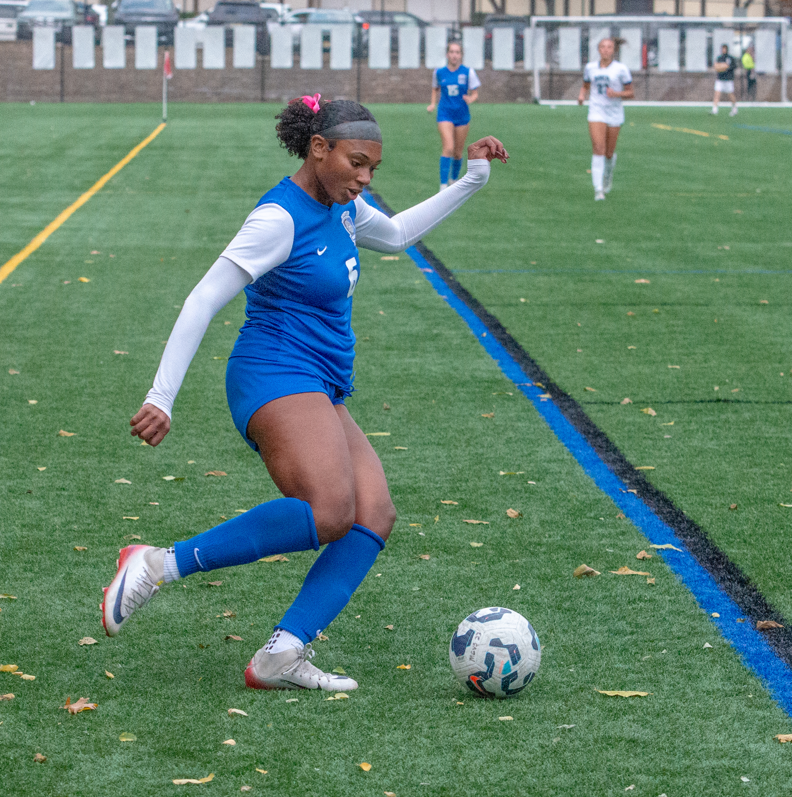
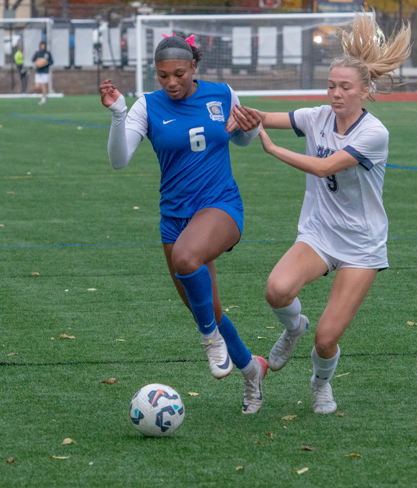

Player Bio

Autumn Donegan is a Class of 2027 striker and outside winger from Montclair High School in New Jersey. She has played soccer since age 4 and competes for PSA North and Cedar Stars. Autumn is committed to competing at the highest level while maintaining strong academic standards through honors and AP coursework.
She hopes to bring pace, creativity, goal-scoring ability, and a positive presence to a college program.
Position: Striker / Outside Winger
High School: Montclair High School
Club Teams:
- PSA North U17 (Princeton Soccer Academy North) girls 2008
- Cedar Stars GA girls 2008
Academics: 3.5+ GPA, AP / High Honors, MADE Program, National Honor Society
Academic Interests: [Insert intended major or field]
Photos
Headshot

Action Shot 1

Action Shot 2
Awards & Leadership
- CSJ (Center for Social Justice)
- BSU (Black Student Union)
- MHS Girls Soccer Freshman MVP Award
- ECNL All-Regional Girls Northeast
- Varsity starter for 3 years
- Dual athlete in soccer and track
- National Honor Society
Key Strengths
Pace: Elite speed and acceleration for a striker.
Goal-Scoring Ability: Consistent scorer with both feet and strong finishing under pressure.
Playmaking: Creates chances for teammates with vision and passing.
Autumn is often double-teamed and heavily pressured, so her stats do not fully reflect her ability and impact.
Track Speed Profile
200m: 26.97
55m: 7.72
200m Rank: 9th in North I
55m Rank: 18th in North I
Speed translates to soccer through acceleration, runs behind defenders, separation, pressing, and recovery pace.
Recruiting Profiles & Video
View Autumn's full recruiting profile on NCSA and watch her full game film:
NCSA Recruiting Profile Full Game Film Highlight Reel in ProgressUpcoming Events
Autumn will be competing at the following showcases:
- Jefferson Cup College Showcase — [Date] — [Location] — PSA North U17
- Penn Fusion College Showcase — [Date] — [Location]
- PDA Showcase — [Date] — [Location]
- EDP Fall Showcase — [Date] — [Location]
Jersey number: [Insert when known]
Contact Information
Autumn Donegan
Email: [Insert email]
Phone: [Insert phone]
Club Coach — PSA North
Lucas Loya: lloya@princetonsocceracademy.com
Dennis Ulloa: dulloa@princetonsocceracademy.com
Club Coach — Cedar Stars Academy
Alex Rebeiz: Alex.Rebeiz@cedarstars.com
High School Coach — Montclair HS
Ashley Hammond: ashley@cpsoccer.us
Rob McOmish: rmcomish@montclair.k12.nj.us
Programs I'm Evaluating
Programs I am interested in learning more about:
- Howard University
- University of Miami
- Temple University
- University of Pennsylvania
- Brown University
- Columbia University
- UCLA
- USC
- Northwestern University
- Northeastern University
- Florida State University
- University of Louisiana Monroe (ULM)
- Louisiana State University (LSU)
- Penn State University
- University of Tampa
- Tulane University
- University of Maryland
This is not an exclusive list. I am open to evaluating other programs that fit my goals for D1/D2 soccer and academics.
Why This Matters
Autumn brings speed, skill, academics, and leadership to a college program.
She is organized, coachable, and ready to be evaluated by schools that fit her goals.